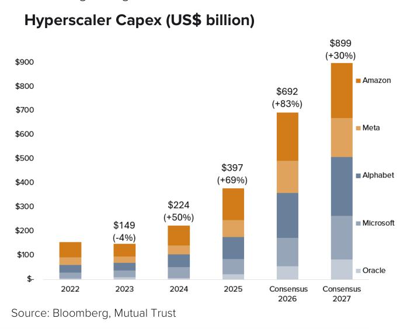
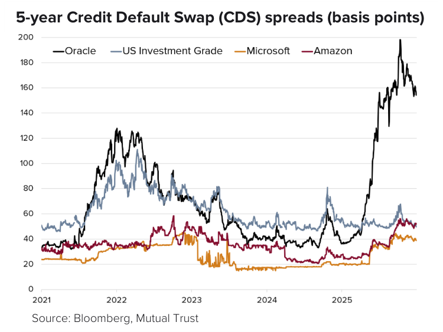
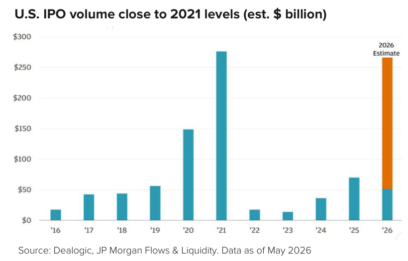
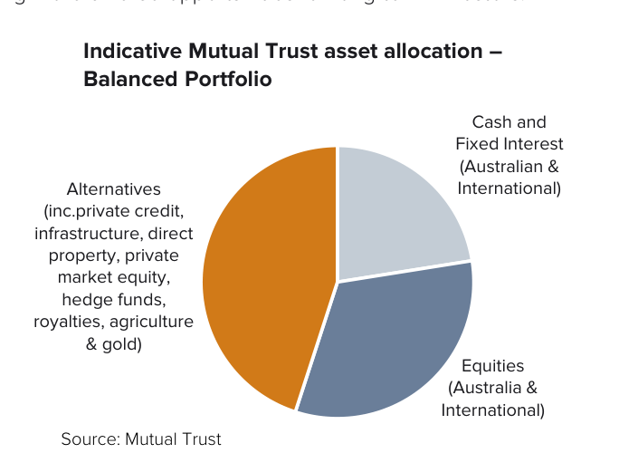

Still waters run deep
Equity indices continue to climb, with a narrow cohort of AI-driven businesses across semiconductors, hyperscalers and adjacent growth franchises driving a disproportionate share of returns. Credit spreads remain tight, and capital markets have so far remained receptive to ever-larger AI-related funding needs.
On the surface, confidence remains high. Beneath this, underlying dynamics are complex and markets are more fragile than headline indices suggest. Volatility is likely as expectations for AI recalibrate or as leadership broadens. Geopolitical tensions persist across several regions, while upcoming political cycles, including elections and shifting policies, are widening the range of outcomes. In this Quarterly Outlook, we explore four questions:
- Will higher rates threaten the AI-capex cycle?
- Can equity market leadership broaden?
- Could a wave of outsized initial public offerings (IPOs) challenge returns?
- How do we design resilient portfolios?
Earnings from AI-related mega-caps continue to deliver, and the scale of investment and breadth of applications point to a multi-year cycle still in its infancy. However, over the medium-term, it is critical to look beyond the current leaders for both sources of return and portfolio protection.
Our base case remains constructive. Global equities are supported by stimulatory policy tailwinds (notably OBBBA and elevated defence spending), sustained AI-capex and resilient earnings growth. The U.S.-- Iran memorandum of understanding is a positive step, although the situation remains fragile and outcomes uncertain.
We maintain a strategic bias towards international equities (predominantly the U.S.) over Australia, while adding exposure to emerging markets. Our portfolios are positioned for broadening market leadership through exposure to adjacent industries in the AI ecosystem and “old economy” sectors leveraged to wider growth dynamics, including industrials, energy, materials and financials. We continue to actively rebalance portfolios, trimming positions that have benefited materially from the recent rally.
We reiterate the role of alternative assets in providing different forms of return and income generation, inflation protection and downside mitigation -- including hedge funds, real assets (property, infrastructure), commodities, royalites (sport, music, mining) and private market debt and equity -- where Mutual Trust allocations are as high as 30% to 50%.
Overall, we emphasise intentional diversification, with each investment playing a defined role in the portfolio, collectively capturing a broader set of opportunities while managing risks beneath the surface.
1. Will higher rates threaten the AI-capex cycle?
Counterintuitively, one of the key risks to markets is an accelerating U.S. economy, which could reinforce a higher-for-longer rate environment. This matters for AI, as the sustainability of the AI build-out is becoming increasingly sensitive to both the cost and availability of capital, given the increased role of debt in financing capex.
Near-term rate expectations have shifted meaningfully on the back of the longer than anticipated conflict in the Middle East and, most recently, stronger than expected U.S. data. The May payrolls report surprised to the upside, adding 172,000 jobs, while U.S. PMI surveys indicated solid expansion across both manufacturing and services sectors, with manufacturing hitting a four-year high.
Although U.S. inflation data showed little evidence of energy-price pass-through to core inflation, the Federal Reserve (Fed) raised core inflation expectations to 3.3% for 2026 (versus 2.7% forecast in March), well ahead of its 2% target. Expectations of monetary easing by the Fed have faded, now assigning a rising probability of a rate hike by December. This shift coincided with renewed volatility across technology and semiconductor equities in June.
Long-dated U.S. bond yields have also moved higher, with the 10-year Treasury trading between 4.4%-4.6% and the 30-year recently approaching its two-decade high of 5.2%. This reflects investors demanding higher premiums to hold long-term government debt amid increased government spending, persistent inflation and resilient growth.
Higher rates particularly matter for AI. They reduce the value of long-duration earnings, but the more important issue is the funding model behind the build-out. AI infrastructure requires large upfront investment and, increasingly, external capital rather than cash flows alone.
Debt is playing a more meaningful role. Hyperscalers issued over US$120 billion of debt in 2025 (more than four times historical levels) with activity accelerating further in 2026 -- including large deals from Amazon and Alphabet. Broader AI-related debt issuance is also running well ahead of last year, arriving at a time when credit spreads remain historically tight.
The top five U.S. hyper-scalers (Microsoft, Meta, Amazon, Oracle, Alphabet) upgraded their capex guidance once again at their recent results, and are now projected to spend circa US$700 billion in capex in 2026, an 83% increase from 2025.
The result is greater selectivity and wider dispersion across issuers, with investors focusing more closely on balance sheet strength and confidence in AI returns. This was evident in the sharp market reaction to Oracle’s recent funding and capex plans, which raised concerns around cash burn, leverage and the monetisation of AI infrastructure. The cost of insuring Oracle’s debt has risen materailly relative to peers (as reflected in credit default swap (CDS) spreads), underscoring growing investor caution.


2. Can equity market leadership broaden?
Whether equity market leadership broadens depends on how the next phase of the AI cycle evolves -- specifically, whether confidence in the current capex-driven model holds, and the strength of the economy.
Broadening in the U.S. could occur through two distinct pathways.
- The first is through sustained confidence in AI, but a widening of beneficiaries. As the cycle matures, leadership can extend beyond platforms and semiconductors into the broader ecosystem required to deploy AI at scale. This includes enablers such as energy, electrical equipment, grid infrastructure, cooling systems, specialised industrial components and key commodities such as copper, where demand is driven by the physical constraints of scaling AI. In this scenario, broadening is driven by expansion across the AI value chain.
- The second is through rotation to more resilient areas of the market. This would likely occur alongside a more supportive economic or geopolitical backdrop, or as investors begin to question the scale, timing, profitability or valuations of AI investment in a higher rate environment.
This rotation was evident earlier in the year when capital shifted into old economy sectors. These capital intensive “heavy asset, low obsolescence” (HALO) exposures – including energy infrastructure (pipelines, power grids), industrials, materials and select defensive names – are supported by tangible assets and more durable demand. Grid investment alone is expected to run to hundreds of billions of dollars globally over the coming decade.
These companies typically offer long asset lives, pricing power and more resilience to AI-disruption than asset-light sectors such as software. In this scenario, broadening is driven by de-crowding at the top of the market.
In practice, broadening is likely to be uneven and path-dependent. The common thread across both scenarios is a reduction in concentration -- either through rotation away from current leaders, or through expansion into a wider set of beneficiaries within the theme.
Importantly, this broadening is unlikely to be confined to public equities. As the opportunity set expands beyond a narrow group of leaders, private assets play an increasingly important role, reflecting the capital-intensive nature of the AI build-out. This reinforces the importance of utilising multiple portfolio levers for diversified exposure to this structural theme.
3. Could a wave of outsized IPOs challenge market returns?
Equity markets are facing a concentrated wave of outsized IPOs in 2026. Periods of market indigestion are possible, particularly if mega-cap technology serves as a funding source for portfolio rebalancing. Post-listing dynamics, including lock-up expirations and rising free floats, are likely to increase equity supply significantly in late 2026 and 2027, while the transition to quarterly financial disclosures could introduce additional volatility for these companies lacking consistent earnings track records.
Equities are facing a more finely balanced supply-demand backdrop. After several years of subdued activity, 2026 is shaping up to be a record year for IPOs in dollar terms. Three of the world’s largest private companies (SpaceX, OpenAI and Anthropic) are going public, with a combined valuation exceeding US$3.5 trillion. This marks an unusually large and concentrated wave of supply. Notably, SpaceX’s IPO was the largest in history, yet only 4.3% of its equity was free float (reflecting significant insider lockups that will unwind over time).

Concurrently, listed companies are increasingly tapping equity markets to fund AI investment. Alphabet’s recent US$85 billion capital raise -- the largest equity offering in U.S. corporate history -- highlights the scale of funding required to support AI build-out.
For now, the overall supply backdrop remains manageable. Total corporate equity issuance is still below long-term averages as a percentage of the overall market, and buybacks are an important offset. While hyperscaler buybacks are declining sharply, banks are undertaking major buyback programs (such as JPMorgan, Bank of America and Goldman Sachs). Together with strong M&A activity, equity demand is expected to outweigh new supply in 2026.
So far, markets have absorbed this well, however the mechanics are still evolving. While passive flows and index inclusion should provide early demand for large IPOs - often supporting initial price performance -- these flows are largely mechanical. Index rebalancing may require capital to be rotated out of existing mega-cap holdings, creating pockets of volatility as markets absorb new issuance and portfolios rebalance.
This process isn’t a one off. Index providers are taking different approaches to inclusion, with some adding these companies within days and others delaying for a year or more. For example, the Nasdaq 100 relaxed its rules to allow SpaceX to be included after just 15 trading days (compared to a previous three-month minimum), despite the relatively low free-float. These differences in treatment could extend the period over which supply is absorbed.
Approaches to index inclusion by provider
| S&P 500 | Russell 1000 | Nasdaq 100 | MSCI USA | |
|---|---|---|---|---|
|
Seasoning Period (Fast-entry timeline) |
12 months | 5 trading days | 15 trading days | 10 trading days |
| Fast Track eligible | ✗ | ✓ | ✓ | ✓ |
| Profitability screen | ✓ | ✗ | ✗ | ✗ |
Source: iShares, Index providers S&P Dow Jones Indices, MSCI, FTSE Russell, Nasdaq, as of June 5, 2026
**Seasoning period reflects fast-entry timeline for those that are eligible
4. How do we design resilient portfolios?
We recommend remaining predominantly invested in risk assets within a disciplined, long-term strategy. Intentional diversification remains critical -- across asset classes, regions and sectors -- with each component playing a distinct and complementary role in portfolio construction.
After several years of narrow leadership driven by U.S. mega-cap technology, we expect a gradual broadening over the medium-term, creating more diverse opportunities for long-term investors.

Mutual Trust equity portfolios are well positioned to benefit from this shift. We include exposure to adjacent industries in the AI ecosystem beyond hyperscalers and semiconductors, while maintaining exposure to capital intensive, economically essential sectors leveraged to broader growth dynamics. We continue to actively rebalance portfolios, trimming positions that have materially benefited from the recent rally.
We retain a core exposure to equities and fixed interest, while increasingly adding alternative assets to portfolios -- where our allocation may be as high as 30% to 50%. Non-traditional assets may enhance portfolios through differentiated return drivers. For example:
- Unlisted infrastructure – stable, long-duration cash flows with inflation-linked characteristics and exposure to the global capex cycle;
- Royalties (e.g. sport, music, mining) – stable, often inflation-linked income streams with low correlation to traditional assets;
- Commodities – exposure to structural demand across electrification and data centre themes, including copper and energy;
- Hedge funds – diversified strategies that provide downside protection and/or access to idiosyncratic opportunities;
- Private credit – reliable income generation with capital preservation characteristics; and
- Direct property - preserving purchasing power in a higher inflation environment and support income resilience.
In combination, these exposures are designed to enhance portfolio resilience in an environment where headline strength is masking deeper complexity -- providing both long-term growth and strategic defence (refer to our article Strategic Defence).
Please refer our asset class views below for more detail.
Asset class views – June 2026
Equities
Our base case remains that international equities may continue to benefit from positive fundamentals -- stimulatory policy tailwinds, AI-capex spend and robust earnings expansion.
We maintain our bias towards U.S. companies, which are supported by superior earnings growth relative to the rest of the world (16% forecast for the S&P500 in 2026 versus ~9% for the EuroStoxx 600), while including selective exposure to Japan and Europe.
Mutual Trust portfolios are well positioned for a broadening in market leadership. Our preferred sectors (based on valuation) include materials, energy, financials and industrials -- such as Nucor Corp, Freeport-McMoRan, Exxon Mobil, JP Morgan Chase and Mitsubishi Corp.
Within technology, we are highly selective, preferring companies like Apple Inc. and Microsoft with strong balance sheets and “cash-cow” business segments to fund growth. We also include exposure to Broadcom and Cisco as beneficiaries of AI.
For Australian equities, active management remains essential given the ASX200 Index is highly concentrated in low growth sectors. Many companies outside the Australian financials currently offer more appealing attributes, with superior earnings growth versus the ASX200 Index over the next two years.
Select quality industrial companies appear particularly attractive, and resources are traditionally strong beneficiaries of accelerating global growth. BHP and Rio Tinto have market leading, low-cost iron ore positions and growing exposure to future facing commodities such as copper and lithium.
We provide additional equity diversification by blending direct holdings with funds, such as Australian and International mid-to smaller-capitalisation companies and emerging market equities -- with regions such as Indonesia and India offering strong population growth and an expanding middle class.
We recognise there are risks in certain sectors of the market. Valuations are stretched by historical standards -- the S&P 500’s forward price to earnings (P/E) of 20.5x is above its long-term average, albeit supported by strong earnings growth for now.
While valuation metrics are not precise timing tools (assets can stay cheap or expensive for a long time before correcting), they offer some insight into the long-term return potential of equities -- future returns may be constrained if the entry point is lofty. Sentiment can shift quickly, and concerns around AI capex sustainability or negative earnings surprises by mega-cap technology companies may pose downside risks to broader global equity markets given their concentration within major indices.
Fixed Interest
Our long-term preference for Australian fixed interest over international markets remains unchanged. We continue to structurally favour credit, reflecting our view that government bonds are becoming less effective as equity diversifiers in an environment of persistently high and volatile inflation.
Following three rate hikes and the drag from negative wealth effects associated with the Australian Budget 2026-2027, we believe the RBA is now significantly closer to the end of its tightening cycle. Whilst policy rates are in restrictive territory, we do not expect a sharp economic slowdown that would necessitate near-term rate cuts in Australia. Accordingly, a neutral duration stance remains appropriate.
In the quarter, we slightly reduced our underweight duration positioning in International fixed interest. Resilient U.S. economic data has prompted markets to price in a potential rate hike by the Fed by December -- a notable shift from earlier expectations of rate cuts. Outside the U.S., the risk of a policy misstep appears elevated, especially in regions heavily reliant on oil imports such as Europe and the UK, where further tightening could exacerbate existing stagflationary pressures.
While we remain overweight credit within our fixed interest allocation, we have modestly reduced this position in the last quarter. The impact of the Iran conflict on oil supply is likely to temper global economic activity relative to earlier in the year -- current historically tight credit spreads do not appear to adequately compensate for this risk. Additionally, increased corporate bond issuance, particularly from AI hyperscalers in the U.S., is expected to create further headwinds for spread performance.
Direct Property
Australian commercial property is increasingly a tale of two markets, with performance diverging between premium assets and the rest of the market. In this environment, asset selection rather than broad exposure is the primary driver of returns.
Sub sectors and locations are experiencing varied conditions, with capital increasingly directed toward quality assets offering defensible income, rental growth potential and manageable capex. In contrast, lower-quality assets are facing headwinds from shifting tenant preferences, rising operating costs and tighter financing conditions (refer to our article Behind the façade).
Our approach focuses on lower-risk assets in prime or central locations where structural trends (i.e. strong population growth, significant infrastructure investment, and elevated construction costs limiting new supply) should underpin demand for well-located space over the long-term. In addition, we prefer investments offering clear exit strategies within the current cycle. Our portfolios are well diversified regionally, with recent investments made in Brisbane, Adelaide and Sydney.
Rigorous due diligence, disciplined acquisition pricing, and active management remain critical to managing risk and optimising returns.
Real assets, such as direct property, play an important role in portfolio construction by preserving purchasing power in a higher inflation environment, supporting income resilience and lowering portfolio volatility. The Australian Budget 2026-2027 announced the curtailment of negative gearing for residential property – but unchanged for commercial property – potentially driving a gradual reallocation of capital towards commercial assets.
Unlisted Infrastructure
Infrastructure remains well-positioned for 2026, supported by resilient demand and structural themes such as AI-driven data centre expansion and the energy transition. While rising development costs and geopolitical fragmentation may slow new projects, the sector’s defensive cash flows, inflation-linked revenue models, and strategic importance should sustain investor interest.
We prefer exposure to infrastructure funds with a disciplined investment approach that target assets offering inflation linkage (implicit or explicit), downside protection, high cash flow visibility, and exposure to structural tailwinds.
We also favour strategies spread across sectors and geographies to deliver more consistent returns. By taking a diversified approach, we believe investors can achieve a more balanced and resilient portfolio through market cycles.
Hedge Funds
Through their employment of a wide range of strategies, hedge funds are positioned to generate reasonable risk-adjusted returns which are less correlated with traditional asset classes. This feature is well-suited to the current environment where equity and bond markets are increasingly positively correlated (reducing traditional diversification benefits). Furthermore, greater dispersion of company performance creates opportunities for active strategies.
Our approach is to blend hedge fund exposures through thoughtful construction with a single-strategy and/or multi-strategy approach.
An allocation to single-strategy hedge funds can offer targeted exposure to specific market inefficiencies or defensive characteristics. This requires a proactive approach to blending, rebalancing and oversight.
Alternatively, a multi-strategy hedge fund provides built-in diversification across a range of underlying investment approaches, often with dynamic allocation and risk management embedded within the structure. Together, these solutions offer flexibility and resilience when traditional diversification may not deliver.
Private Markets Equity
We continue to favour early-stage venture capital opportunities focused on addressing global challenges (i.e. food security, decarbonisation, waste reduction, technological innovation), and secondary strategies providing liquidity solutions to investors. Furthermore, we see opportunities in the national security sector, especially dual-use technologies with large global target markets (refer to our article The security of everything). While valuations among AI start-ups are commanding a significant premium, not all will succeed.
In private equity, secondary strategies remain attractive in an environment of delayed exits, historically low distributions and slower fundraising. Within this backdrop, we expect the return profile from secondaries to be elongated. In buyout, we maintain a preference for the small and middle-market segment, where deal dynamics are typically more favourable: competition is lower, financing structures are more conservative, public market correlations are reduced, and valuations are generally more compelling.
The proliferation of open-ended (semi-liquid) structures, especially within private equity, continues unabated. We expect a slow-down in late 2026 after most large, well-resourced asset managers have launched funds. These vehicles are strategically important to help build diversified private markets programs. Given liquidity management complexities, we continue to strongly favour managers with established track records.
Deal pipelines and exit activity are expected to be influenced by the trajectory of U.S. rates, the sustainability of IPO momentum, and geopolitical uncertainty.
Private Credit and Property Debt
We continue to allocate to corporate private credit and property debt as sources of attractive, stable returns. The structural growth drivers for private credit -- stemming from the pullback in corporate lending by banks due to regulatory changes, increasing borrower sophistication, and the ability of non-bank lenders to offer capital flexibility and execution certainty -- remain firmly in place.
Our approach prioritises a combination of defensive, performing private credit and real estate debt exposures, complemented by selective opportunities in distressed debt.
Higher interest rates, material costs and uncertainty in the residential property outlook are near-term headwinds for the residential property debt asset class. For non-property private credit, the benefit of higher interest rates on loan returns may be offset somewhat by higher probability of default. With that said, we believe many private credit strategies should be well positioned to weather this challenging backdrop via disciplined investment selection and proactive risk management.
On a positive note, unlike in the U.S., we believe Australian private credit universe is relatively insulated from AI disruption given its lower exposure to software loans.
Please reach out to your Mutual Trust Advisor with any questions. If you are exploring a new advisory relationship, we invite you to connect with Mutual Trust to discuss how we can support your family’s long-term objectives.